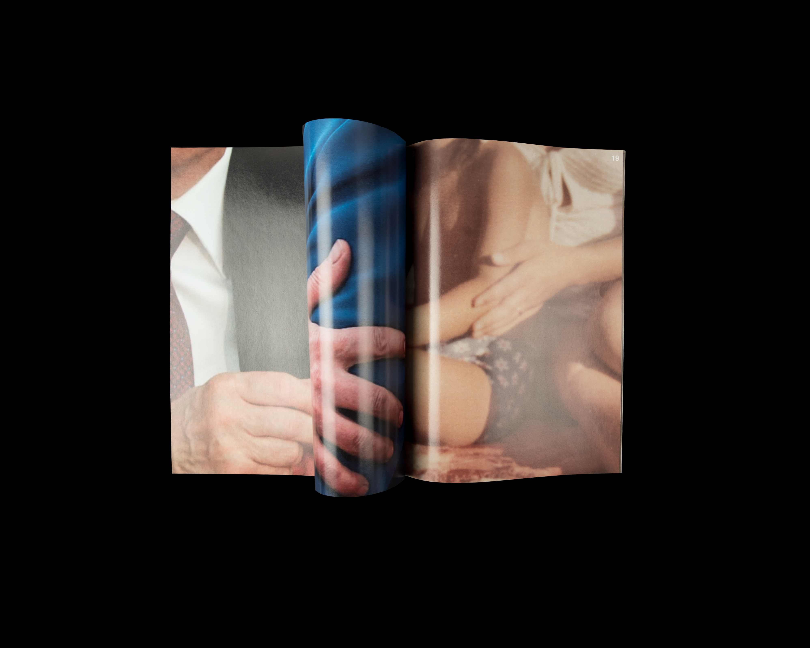

Life in Pictures
This editorial project emerged as a school project in the fourth semester. The assignment was to interpret family photographs in a different and new way. I focused on the image sections with hands in them. In pictures, hands can tell a lot more than the fake and pretended smiles. They show how the person felt at he moment when the picture was taken and how they are related to each other. The dramaturgical construction of the publication starts with pictures of the insecure hands of an individual. The pictures following subsequently show a gradual development of the increasing confidence in the gestures. Starting from the middle of the book, the pictures not only show hands of an individual person, but two hands touching each other, hence emphasizing the relationship between the two people. The publication uses the opposition of intimate photographs of my family on the right page and public photographs of politicians on the other page. Therefore, the difference between intimacy and public view of gesture is highlighted. The cover focuses on the localization of the index of the pictured people, who can each be identified by their first names (like Vladimir, Angela, Gino, Luisa etc.) These pictures also show intimacy in a public space.
ABOUT
Laura Leuenberger (*1994) is a graphic designer based in Switzerland.
2014 - 2015 Remedial Art Course Hochschule für Kunst und Design Luzern
2015 - 2018 Bachelor Visual Communication Hochschule der Künste Bern
Webdesign: Laura Leuenberger Code: Michael Schürmann
WORK
KFZ
Life in Pictures
Big Data
Heimat
Pure News
ABCicade
Royal Baden

Mousposition